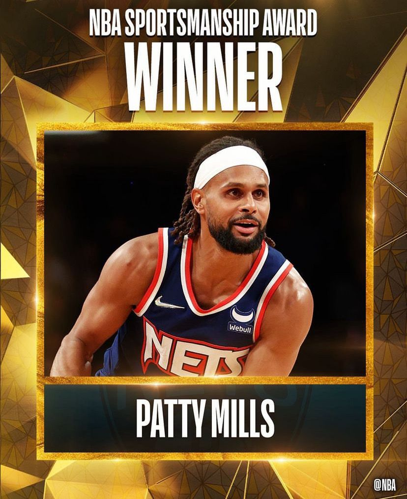

El Top10 de los Playoffs
| # | Jugadores | Posicion | Minutos Jugados | Puntos | 3p% | Reb | Asist |
|---|---|---|---|---|---|---|---|
| 1 |
 Giannis Antetokounmpo
Giannis Antetokounmpo
|
AP | 37.3 | 31.7 | 22.0 | 14.2 | 6.8 |
| 2 |
 Luka Dončić
Luka Dončić
|
BA | 36.8 | 31.7 | 34.5 | 9.8 | 6.4 |
| 3 |
 Nikola Jokic
Nikola Jokic
|
P | 34.2 | 31.0 | 34.5 | 13.2 | 5.8 |
| 4 |
 Jimmy Butler
Jimmy Butler
|
ES | 37.0 | 27.4 | 33.8 | 7.4 | 4.6 |
| 5 |
 Stephen Curry
Stephen Curry
|
BA | 34.7 | 27.4 | 39.7 | 5.2 | 5.9 |
| 6 |
 Ja Morant
Ja Morant
|
BA | 37.6 | 27.1 | 34.0 | 8.0 | 9.8 |
| 7 |
 Brandon Ingram
Brandon Ingram
|
AL | 39.3 | 27.0 | 40.7 | 6.2 | 6.2 |
| 8 |
 Kevin Durant
Kevin Durant
|
AP | 44 | 26.3 | 33.3 | 5.8 | 6.3 | 9 |
 Jayson Tatum
Jayson Tatum
|
AL | 41 | 25.6 | 39.3 | 6.7 | 6.2 | 10 |
 Donovan Mitchell
Donovan Mitchell
|
ES | 38.3 | 25.5 | 20.8 | 4.3 | 5.7 |
Lideres en Estadisticas 2021-22
lider en Puntos
30.6 Ppp
lider en Rebotes
14.7 Reb
lider en Asistencias

14.7 Reb
lider en Robos
 >
>
14.7 Reb
lider en Bloqueos

14.7 Reb
lider en triples
14.7 Reb
Premios Temporada 2022

MVP
Detalles del Premio
El serbio Nikola Jokic consiguió su segundo premio de MVP de la NBA luego de guiar a los Denver Nuggets sin Jamal Murray y Michael Porter Jr. Además, sus promedios fueron de 271 puntos, 13.8 rebotes, 7.9 asistencias, 1.47 robos y 0.85 tiros bloqueados; el pívot también lideró la liga en triples dobles con 19 y dobles dobles con 66.

DPoY
Detalles del Premio
Marcus Smart, base de los Boston Celtics, fue el primer base desde Gary Payton en la 1995-96 en conseguir el premio al Jugador Defensivo del Año. Smart solamente permitió 4.8 tiros encestados por partido y robó 1.7 balones por partido. Además, el base de los Celtics ganó el ‘Hustle Award’ que premia a los jugadores que hacen cosas que no aparecen en el registro estadístico como encajonar, desviar los pases, recibir cargas y defender lanzamientos.
RoY
Detalles del Premio
El alero Scottie Barnes se convirtió en el tercer jugador de los Toronto Raptors en conseguir el premio al Novato del Año de la NBA luego de que Damon Stoudamire y Vince Carter lo hicieran en 1995-96 y 1998-99, respectivamente. El egresado de Florida State registró promedios de 15.3 puntos, 7.5 rebotes y 3.5 asistencias tras disputar 74 partidos como titular.

MIP
Detalles del Premio
El ascenso de Ja Morant al estrellato de la NBA ha sido inevitable. El base de los Memphis Grizzlies pasó de 19.1 puntos por partido a 27.4 y de 4.0 a 5.7 rebotes en un año.

6MoY
Detalles del Premio
Tyler Herro se convirtió en el primer jugador del Miami Heat en ganar el premio al Mejor Sexto Hombre luego de salir a la duela como suplente en 56 de los 66 partidos en los que participó y registrar 20.7 puntos, cinco rebotes y cuatro asistencias por compromiso. El shooting guard del Heat se convirtió en el quinto jugador de la NBA en promediar por lo menos 20 puntos como suplente, con un mínimo de 50 partidos jugados.

Jugador Más Deportivo
Detalles del Premio
El Premio al Jugador Más Deportivo de la NBA es un premio anual otorgado por la NBA desde 1996 al jugador más deportivo, de mejor conducta y juego limpio en la pista. El premio es semejante al Kim Perrot Sportsmanship Award, galardonado por la WNBA desde la fundación de la liga en 1997.
Compañero del Año
Detalles del Premio
El premio de Compañero del Año ha correspondido por segunda vez a Jrue Holiday, primer jugador que repite en el palmarés de este galardón que fue impulsado en la temporada 2012-2013 con Chauncey Billups como primer vencedor.
El base de los Bucks se ha impuesto con 964 puntos, seguido por Boban Marjanovic (Mavericks) con 936 y DeMar DeRozan (Bulls) con 898.
Fue un panel de ejecutivos de la liga el que seleccionó a los 12 finalistas (6 por conferencia) y correspondió a los jugadores votar el ganador entre dichos finalistas.
Entrenador del Año
Detalles del Premio
Monty Williams, DT de los Phoenix Suns, se quedó con su primera distinción de este tipo, de acuerdo al voto de la prensa especializada.
Williams recibió 81 votos de primer lugar sobre 100 posibles, superando a los 17 de Taylor Jenkins (Memphis) y al único que recibieron tanto Erik Spoelstra (Miami) como Ime Udoka (Boston). JB Bickerstaff (Cleveland), Tyronn Lue (Clippers), Jason Kidd (Dallas), Nick Nurse (Toronto) y Chris Finch (Minnesota) también aparecieron en los lugares restantes del podio.